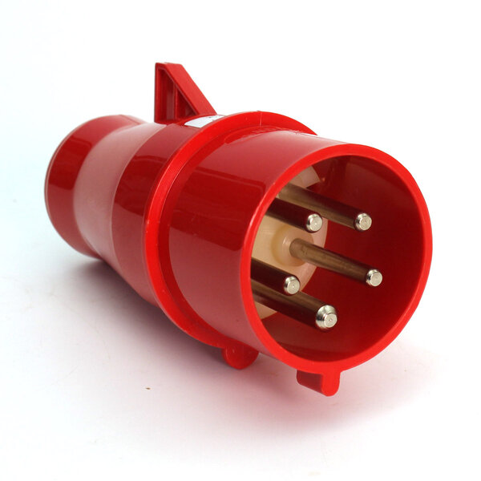

Plugue industrial para uso em redes 380–440V trifásicas com neutro e terra. Corpo em Nylon 6.6 auto-extinguível cor vermelha (identifica visualmente a tensão 380V), pinos de latão maciço niquelado autocentrantes e pino terra prioritário (conecta antes / desconecta depois). Cinco polos (3P+N+T), posição horária 6h. Grau de proteção IP 447, proteção mecânica IK05. Compatível com tomadas industriais da série Cekton e com o padrão internacional CEE 17 / VDE 0623.
todas as direções · IK07
até 6,00 joules
60309
| IN (A) | Polos | A | E (mm) | G (mm) | L (mm) | K (Ø mm) |
|---|---|---|---|---|---|---|
| 32A | 3 (2P+T) | × | 57 | 93,5 | 139 | 29 |
| 32A | 4 (3P+T) | × | 57 | 90 | 134,5 | 29 |
| 32A | 5 (3P+N+T) ◄ | × | 63,5 | 93,5 | 136,5 | 32 |
◄ Linha em destaque = configuração deste produto (5276/CK). Todas as dimensões em milímetros (mm).
Design e material garantem rendimento máximo aos valores nominais e resistem a esforços mecânicos e térmicos.
Formam uma só peça com buchas e pinos de contato, resultando em melhor continuidade e fixação dos condutores.
Latão maciço niquelado — peça única. Contato perfeito, alta resistência à abrasão e oxidação. Pinos autocentrantes.
Diâmetro maior: conecta antes e desconecta depois, garantindo máxima segurança em todas as manobras.
Auto-extinguível, resistente à abrasão. Cor vermelha identifica a tensão 380–440V. Facilita manutenção.
Hermeticidade perfeita ao condutor. Impede entrada de pó/água. Bitolas recomendadas: 6 a 10 mm².
Matéria Prima
Miolo e Carcaça injetados internamente em termoplástico Nylon 6.6 auto-extinguível (Poliamida). Todos os componentes plásticos e contatos de latão são produzidos na fábrica STRAHL, em conformidade com os requisitos regulamentares e estatutários pertinentes. Todo lote produzido é inspecionado e ensaiado com resultados registrados por pessoal competente.
Conformidade Normativa
* IP: grau de proteção dos invólucros de materiais elétricos. Os dois primeiros algarismos são definidos conforme IEC 144 e IEC 529; o terceiro algarismo conforme o Anexo 1 da norma NFC 20 010.
Materiais Elétricos STRAHL